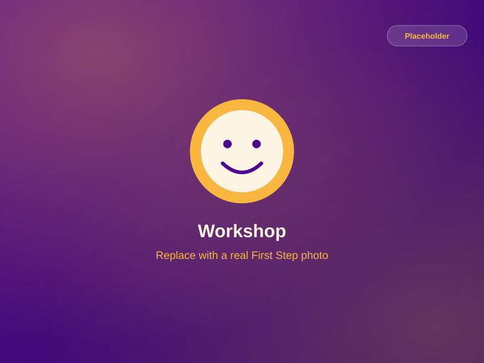
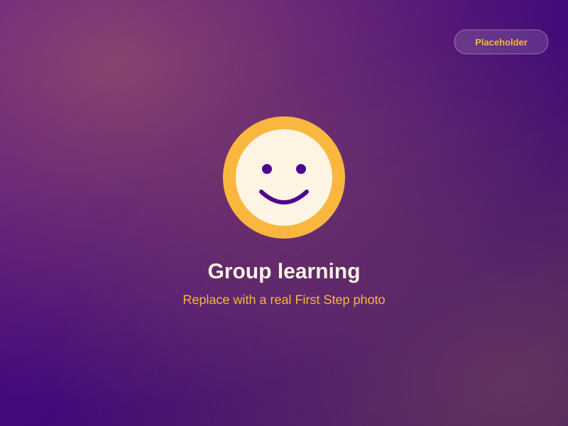
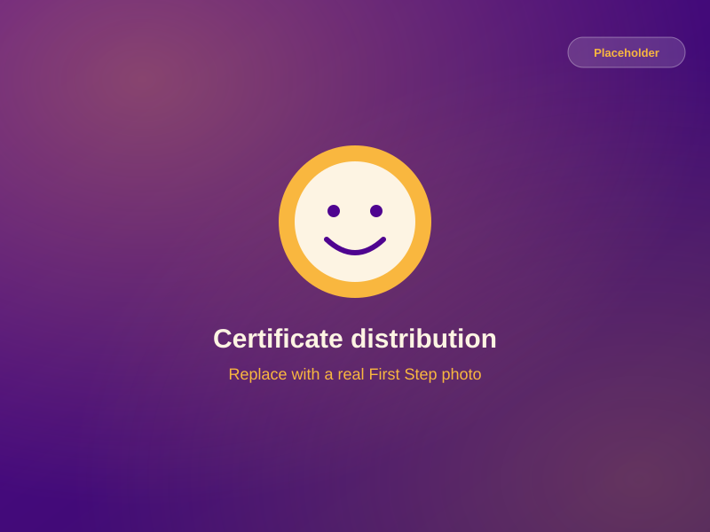

Practical, not just theoretical
Learning is grounded in real classrooms, real children and real situations — not only in notes and lectures.
Teacher Training
9-Month Practical Preschool Teacher Training Programme
Learn. Communicate. Understand. Educate. Grow.
A 9-month programme by Shri Swami Samarth Krupa Foundation's First Step Preschool — built on hands-on experience, practical learning and a deep understanding of children, with certification on completion.
Why this programme?
A good preschool teacher is patient, observant, creative and calm. These qualities grow with real classroom experience — and that is exactly what this programme is built around.
Learning is grounded in real classrooms, real children and real situations — not only in notes and lectures.
Everything flows from understanding how children develop, behave and communicate — so teaching becomes natural, not forced.
Nine months of guided learning give confidence time to build — through observation, practice, feedback and reflection.
Participants receive a programme completion certificate — a record of the learning and practical experience they have earned.
What you will learn
The programme explores these areas through explanation, discussion and hands-on classroom practice.
How children grow physically, emotionally, socially and mentally between 2 and 6 years.
Why children behave the way they do, and how to read their needs, moods and signals.
Speaking with warmth and clarity, listening properly and guiding children with positive words.
Planning age-appropriate activities through which children learn by doing, playing and exploring.
Using stories, rhymes and songs to build language, attention, imagination and joy.
Art, craft, music, movement and play that develop children's creativity and confidence.
Keeping a preschool classroom calm, safe, organised and full of learning — through routines, not force.
Encouraging children, guiding behaviour kindly and helping every child feel safe and valued.
Talking with parents honestly and helpfully about their child's day, growth and needs.
Building the habits of reflection, feedback and continuous learning that make a teacher grow.
The heart of this programme is practice. Participants learn through real situations, with guidance at every step.
Children are not small adults. This programme helps participants genuinely understand young children.
Classroom experience
Because the programme runs at First Step Preschool, participants learn inside the very environment they are preparing to work in.
Watching experienced teachers and learning from real situations, one day at a time.
Joining circle time, activities and routines under patient guidance and feedback.
Preparing activities for real age groups, then seeing how children respond.
Reviewing each day with guidance to understand what worked, and why.
Your 9-month journey
A guided learning journey through the whole programme. It is shown here as broad stages — each participant moves through them at their own pace, with support.
A blend of explanation, discussion, observation and practice — designed to build both knowledge and confidence.
On successful completion of the 9-month programme, participants are provided a programme completion certificate from Shri Swami Samarth Krupa Foundation's First Step Preschool.
Programme photographs
Training sessions, classroom practice and moments from the programme journey.



No photos in this category yet — check back soon.
Sample photos are shown for now and will be replaced with real programme photographs.
From our participants
The months I spent at First Step changed how I see children completely. I learned more from observing real classrooms than from any book - and I left feeling genuinely prepared to teach.
I had read about child development before, but the hands-on experience here made it real. Understanding why children behave the way they do made me confident and calm in the classroom.
What stood out was how much practice we got. We were not just learning theory - we were in the classroom, with children, learning through real situations every week.
Sample testimonials are shown for now and will be replaced with real participant words.
Enquiry & registration
Ask us anything about the 9-month teacher training programme — we will be happy to share more details and invite you for a visit.